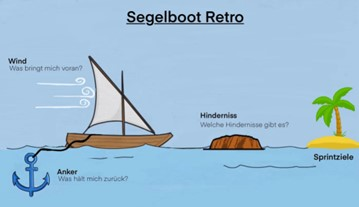

Recent Blog
April 14, 2018 | Web Design | 4
Renovating National Gallery
Separated they live in Bookmarksgrove right at the coast of the Semantics, a large language ocean.

April 14, 2018 | Web Design | 4
Wordpress for a Beginner
Separated they live in Bookmarksgrove right at the coast of the Semantics, a large language ocean.

April 14, 2018 | Inspiration | 4
Make website from scratch
Separated they live in Bookmarksgrove right at the coast of the Semantics, a large language ocean.